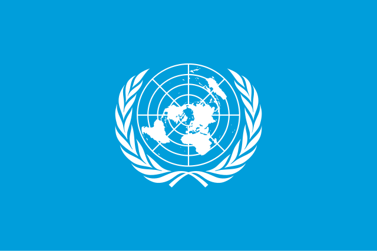
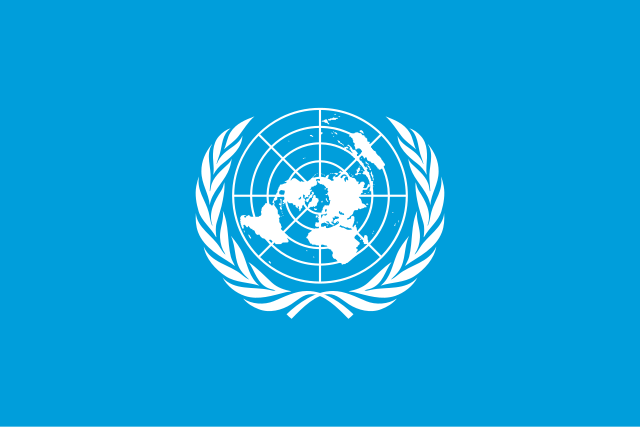

Gallery

.jpg)

Gwynne 92/24

PBB atau Perserikatan Bangsa-Bangsa atau United Nations adalah sebuah organisasi yang mendorong kerjasama internasional untuk mengikat hubungan bangsa satu sama lain. Organisasi ini didirikan pada tanggal 24 Oktober 1945 di Amerika. Fungsi PBB/UN adalah untuk memberikan perlindungan untuk semua negara di dalamnya. Salah satu program PBB adalah WFP yang mempunyai singkatan World Food Programme dimana pihak PBB memberikan makanan bagi orang-orang yang membutuhkannya. 152 Juta orang sudah menerima bantuan dari WFP. Sekitar 120 negara sudah menerima bantuan dari WFP.
Hubungan PBB dengan Indonesia
Indonesia masuk ke PBB/UN pada 28 September 1950 oleh karena itu banyak sekali program-program PBB yang dipartisipasikan oleh Indonesia. Salah satunya adalah lembaga-lembaga PBB. Lembaga-lembaga PBB yang Indonesia ikut serta adalah WHO (World Health Organization), UNESCO (United Nations Educational, Scientific and Cultural Organization), UNDP (United Nations Development Programme), UNICEF (United Nations Children Fund), ataupun UNHCR (United Nations High Commissioner for Refugees).
Hubungan PBB dengan Kamboja
Kamboja menjadi anggota PBB pada tahun 1955. Kamboja termasuk negara yang aktif dalam mengikuti program-program PBB. Salah satu program PBB yang diberikan untuk Kamboja adalah UNTAC (United Nations Transitional Authority in Cambodia). UNTAC bertugas untuk memantau pemilihan umum yang ada di Kamboja pada saat tahun 1993. PBB membantu Kamboja untuk mendapatkan SDGS yang sama dengan negara lainnya. HAM di Kamboja juga dipegang penuh oleh PBB.
SUMBER UNICEF CAMBODIA CAMBODIA POLICY UNITED NATIONS SUMBER UNICEF INDONESIA PBB/UN